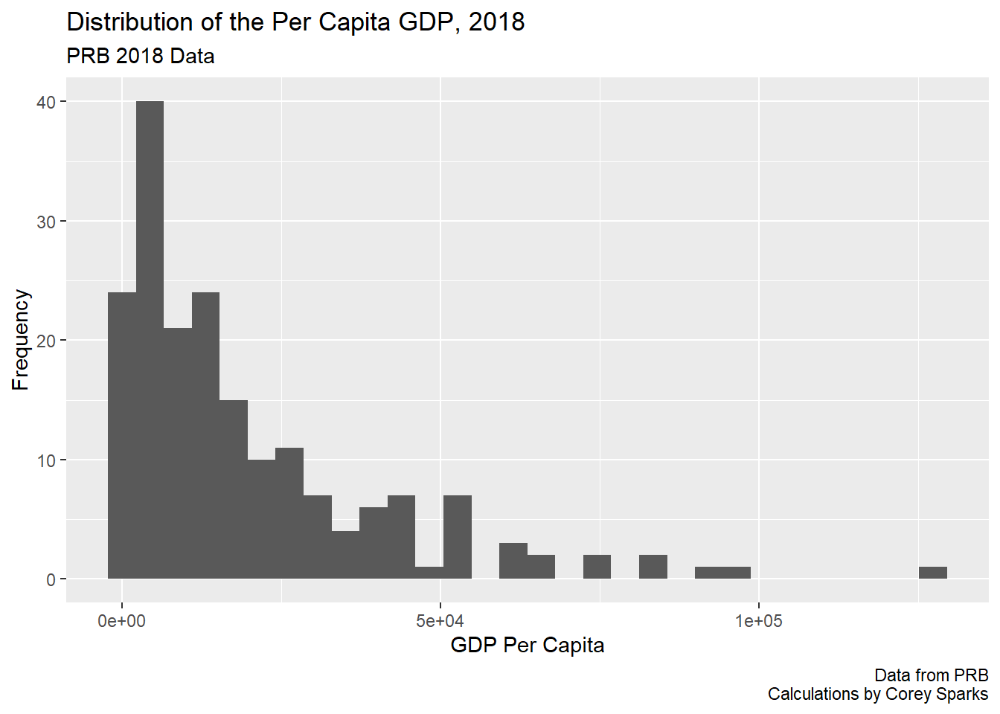
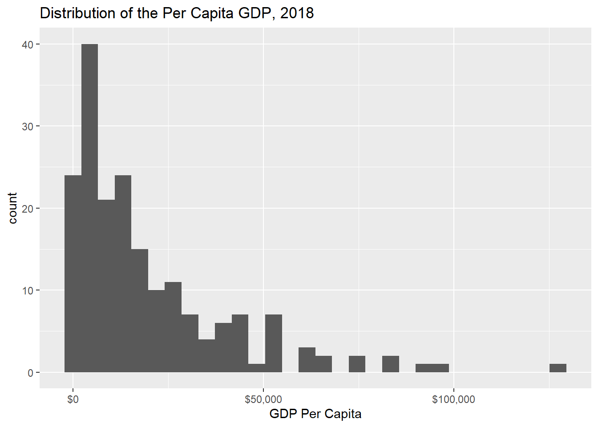
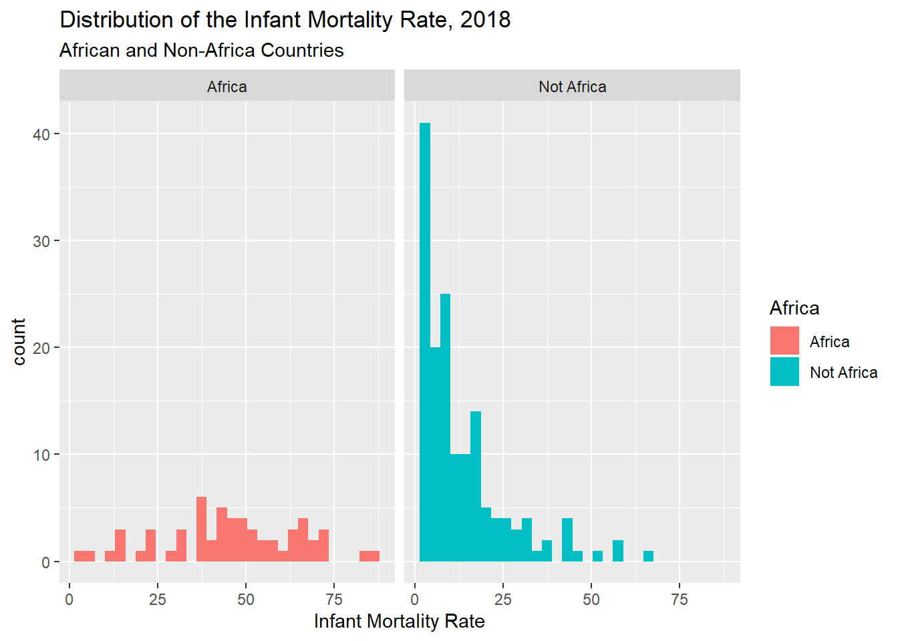
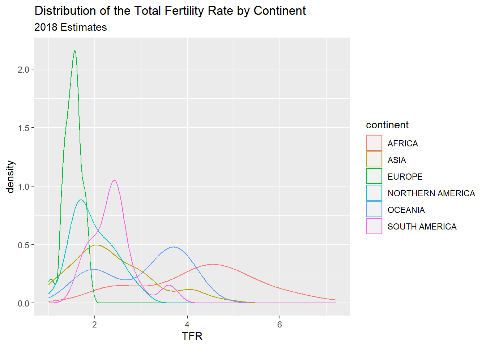
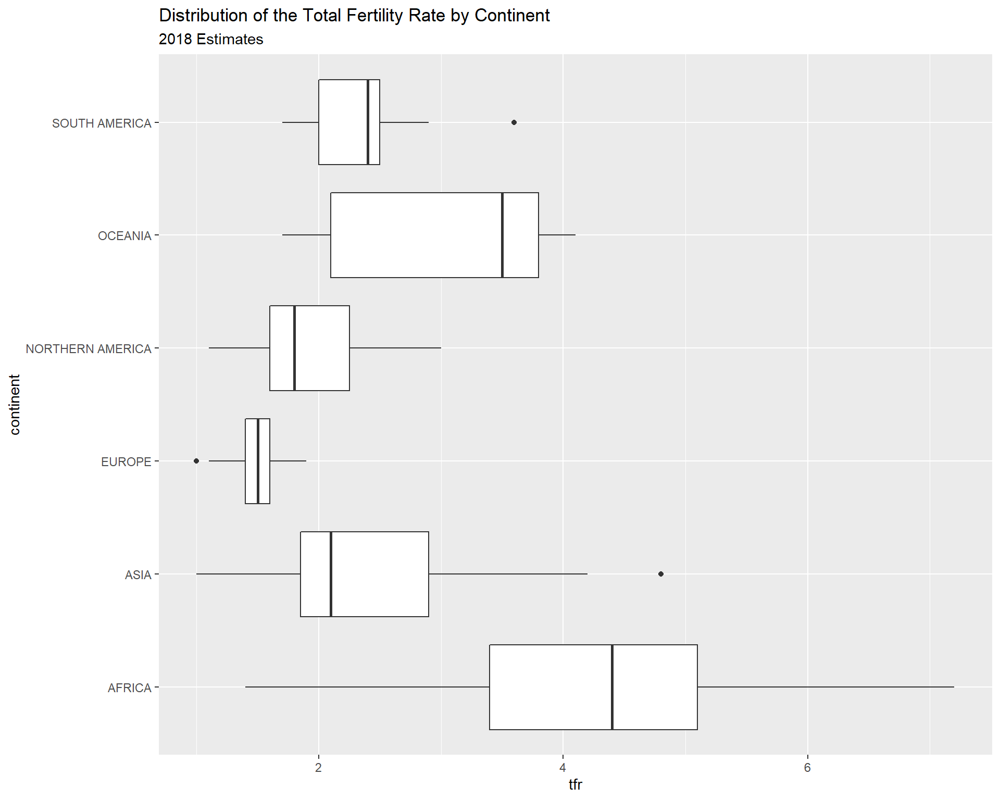
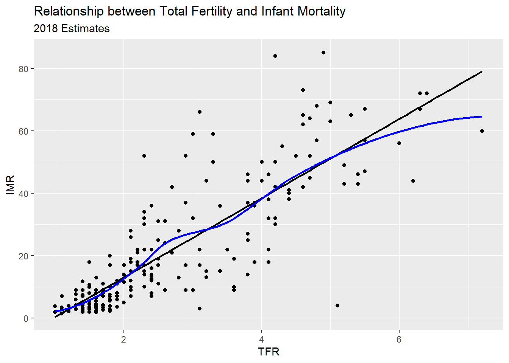
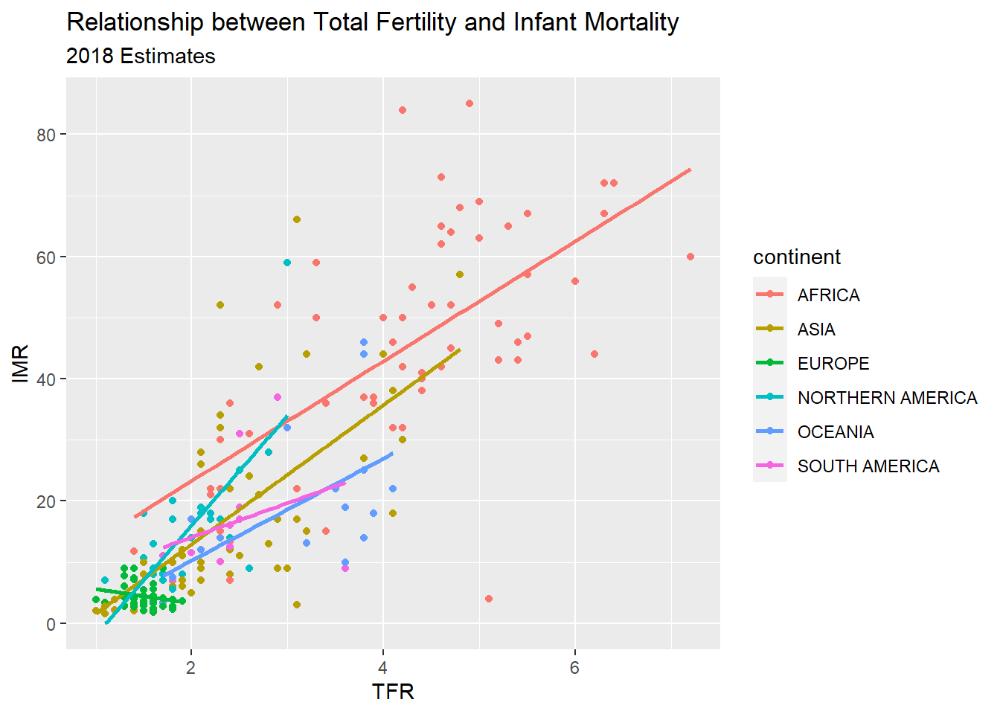
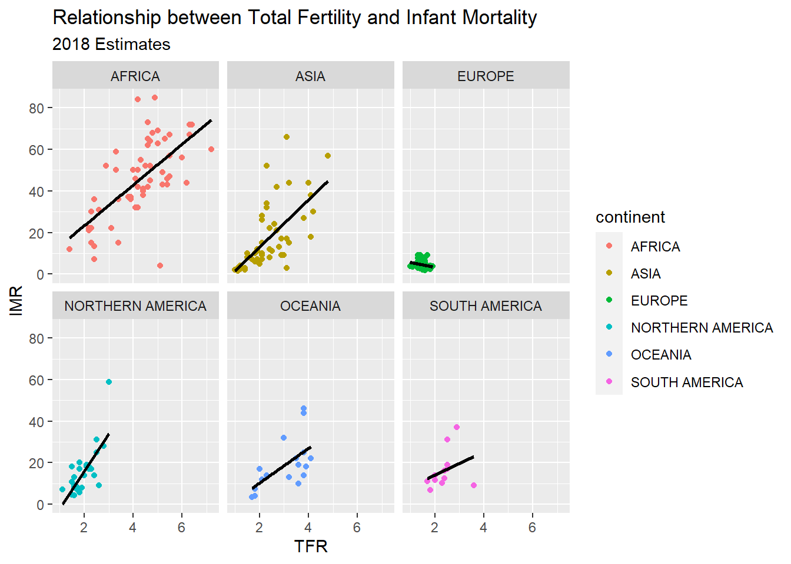
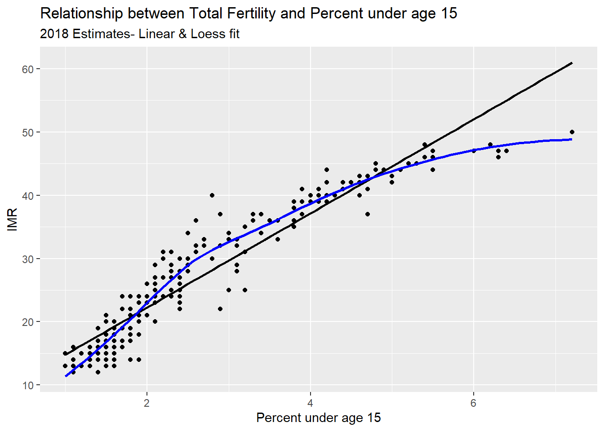
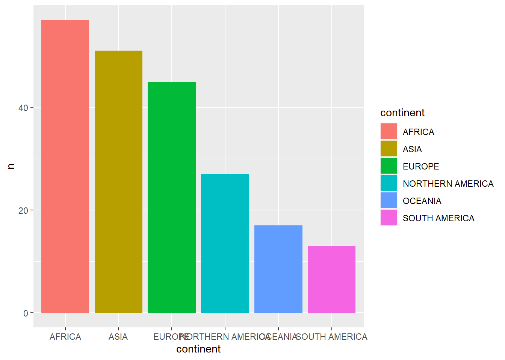

source("https://raw.githubusercontent.com/coreysparks/Rcode/master/install_first_short.R")R Bootcamp for Graduate Students - Day 2
R Bootcamp for Incoming Graduate Students
When: August 16, 6pm to 8pm
Where: Zoom Link Here
What we’ll do:
This will be a short introduction to the R statistical programming language. This is intended to ease the anxiety over using R for your statistics courses. We realize that many incoming students have not used R or any programming language.
What you’ll get from this:
This bootcamp will get you set up on your personal computer using R. This includes installing R, Rstudio and any other associated software, and getting you oriented with where things are.
Agenda
| Day | Topic |
|---|---|
| Wednesday | Q&A |
| Wednesday | Basic ggplot |
| Wednesday | Break |
| Wednesday | Basic dplyr |
| Wednesday | R file types |
| Wednesday | Common packages |
| Wednesday | Q&A |
Day 2
Packages for today
I strongly recommend you install several packages prior to us beginning to use R, so you will not be distracted by this later. I’ve written a short script on my Github repository and you can use it by running:
This will install a few dozen R packages that are commonly used for social science analysis and some other packages I find of use.
Our data for today
Today we will use the 2018 World Population Data sheet from the Population Reference Bureau. I have this data on my Github data site as a CSV file.
We can read this in using the read_csv() function in the readr package.
library(readr, quietly = TRUE)
prb = read_csv(file = "https://raw.githubusercontent.com/coreysparks/r_courses/master/2018_WPDS_Data_Table_FINAL.csv")
names(prb) = tolower(names(prb))The tidyverse
So far, most of the functions I have discussed have been from the base R ecosystem, with some specific functions from other downloadable packages. One of the biggest changes to R in recent years has been the explosion in popularity of the tidyverse Wickham et al. (2019). The tidyverse is a large collection of related packages that share a common philosophy of how data and programming relate to one another and work together to produce a more streamlined, literate way of programming with data.
To get the core parts of the tidyverse, install it using install.packages("tidyverse") in your R session. This will install the core components of the tidyverse that can then be used throughout the rest of the course 1.
Two of the workhorses in the tidyverse are the packages dplyr Wickham et al. (2020) and ggplot2 Wickham (2016).
The dplyr package is very thoroughly described in the book R for Data Science Wickham and Grolemund (2017), and the ggplot2 package also has a book-length description in the book ggplot2: Elegant Graphics for Data Analysis Wickham (2016), so I won’t waste time and space here with complete descriptions. Instead, I will show some pragmatic examples of how these work in my own work flow, and also use these packages together to produce some descriptive data visualizations.
Let’s load the library:
library(tidyverse)── Attaching packages ─────────────────────────────────────── tidyverse 1.3.2 ──
✔ ggplot2 3.3.6 ✔ dplyr 1.0.9
✔ tibble 3.1.8 ✔ stringr 1.4.0
✔ tidyr 1.2.0 ✔ forcats 0.5.1
✔ purrr 0.3.4
── Conflicts ────────────────────────────────────────── tidyverse_conflicts() ──
✖ dplyr::filter() masks stats::filter()
✖ dplyr::lag() masks stats::lag()Basic ggplot
Let’s say that we want to compare the distributions of GDP from the PRB data graphically. Since the ggplot2 library is part of the tidyverse, it integrates directly with dplyr and we can do plots within pipes too.
In generally, ggplot() has a few core statements.
ggplot()statement - This tells R the data and the basic aesthetic that will be plotted, think x and y axis of a graph. The aesthetic is defined using theaes()function. This is where you pass values to be plotted to the plot device.- Define the geometries you want to use to plot your data, there are many types of plots you can do, some are more appropriate for certain types of data
- Plot annotations - Titles, labels etc. This allows you to customize the plot with more information to make it more easily understandable.
Now I will illustrate some basic ggplot examples, and I’m going to use the PRB data that I have been using for other examples. In order to better illustrate the code, I will walk through a very minimal example, line by line.
library(ggplot2) Loads the ggplot package
ggplot(data = prb, mapping = aes(x = gnigdp))+ Use the ggplot function, on the prb dataframe. The variable we are plotting is the total fertility rate, gnigdp. In this case, it is the only variable we are using. I include a + at the end of the line to tell R that more elements of the plot are going to be added.
geom_histogram()+ Tells R that the geometry we are using is a histogram, again we have the + at the end of the line to indicate that we will add something else to the plot, in this case a title.
ggtitle(label = "Distribution of the Per Capita GDP, 2018") Tells R the primary title for the plot, which describes what is being plotted. I’m also going to add an additional annotation to the x-axis to indicate that it is showing the distribution of the TFR:
xlab(label = "GDP Per Capita")
Now, let’s see all of this together:
library(ggplot2)
ggplot(data=prb,
mapping=aes(x = gnigdp))+
geom_histogram()+
labs(title ="Distribution of the Per Capita GDP, 2018",
caption = "Data from PRB\n Calculations by Corey Sparks",
subtitle = "PRB 2018 Data")+
xlab(label = "GDP Per Capita")+
ylab(label = "Frequency")Warning: Removed 21 rows containing non-finite values (stat_bin).
You may notice the strange notation in the x axis of the plot. This is R’s standard scientific notation. This isn’t very nice when you want to plot large numbers, especially money. The scales package can take care of this.
library(scales)
Attaching package: 'scales'The following object is masked from 'package:purrr':
discardThe following object is masked from 'package:readr':
col_factorggplot(data= prb, mapping=aes(x = gnigdp))+
geom_histogram()+
ggtitle(label = "Distribution of the Per Capita GDP, 2018")+
xlab(label = "GDP Per Capita")+
scale_x_continuous(labels = label_dollar())`stat_bin()` using `bins = 30`. Pick better value with `binwidth`.Warning: Removed 21 rows containing non-finite values (stat_bin).
We can likewise incorporate another variable, to create histograms for different groups using the facet_wrap() function.
prb$Africa <- ifelse( prb$continent == "AFRICA",
yes = "Africa",
no = "Not Africa")
ggplot(data= prb,mapping=aes(x = imr))+
geom_histogram(aes( fill = Africa))+
facet_wrap( ~ Africa)+
ggtitle(label = "Distribution of the Infant Mortality Rate, 2018",
subtitle = "African and Non-Africa Countries")+
xlab(label = "Infant Mortality Rate")`stat_bin()` using `bins = 30`. Pick better value with `binwidth`.Warning: Removed 1 rows containing non-finite values (stat_bin).
You also notice that I used the aes(fill = Africa) to tell R to color the histogram bars according to the variable Africa. The aes() function allows you to modify colors, line types, and fills based of values of a variable.
Another way to display the distribution of a variable is to use geom_density() which calculates the kernel density of a variable. Again, I use a variable, this time the continent a country is on, to color the lines for the plot.
ggplot(data= prb, mapping = aes(tfr,
colour = continent,
stat = ..density..))+
geom_density()+
ggtitle(label = "Distribution of the Total Fertility Rate by Continent",
subtitle = "2018 Estimates")+
xlab(label = "TFR")
Stem and leaf plots/Box and Whisker plots
Another visualization method is the stem and leaf plot, or box and whisker plot. This is useful when you have a continuous variable you want to display the distribution of across levels of a categorical variable. This is basically a graphical display of Tukey’s 5 number summary of data.
prb%>%
ggplot( mapping = aes(x = continent, y = tfr))+
geom_boxplot()+
ggtitle(label = "Distribution of the Total Fertility Rate by Continent",
subtitle = "2018 Estimates")
You can flip the axes, by adding coord_flip()
prb%>%
ggplot( mapping = aes( x = continent,
y = tfr))+
geom_boxplot()+
ggtitle(label = "Distribution of the Total Fertility Rate by Continent",
subtitle = "2018 Estimates")+
coord_flip()
You can also color the boxes by a variable, Here, I will make a new variable that is the combination of the continent variable with the region variable, using the paste() function. It’s useful for combining values of two strings.
prb%>%
mutate(newname = paste(continent, region, sep = "-"))%>%
ggplot(aes(x = newname,
y = tfr,
fill = continent))+
geom_boxplot()+
coord_flip()+
ggtitle(label = "Distribution of the Total Fertility Rate by Region",
subtitle = "2018 Estimates")
X-Y Scatter plots
These are useful for finding relationships among two or more continuous variables. ggplot() can really make these pretty. The geom_point() geometry adds points to the plot.
Here are a few riffs using the PRB data:
prb%>%
ggplot(mapping= aes(x = tfr,
y = imr))+
geom_point()+
ggtitle(label = "Relationship between Total Fertility and Infant Mortality",
subtitle = "2018 Estimates")+
xlab(label = "TFR")+
ylab(label = "IMR")Warning: Removed 1 rows containing missing values (geom_point).
R also makes it easy to overlay linear and spline smoothers for the data (more on splines later).
prb%>%
ggplot(mapping = aes(x = tfr,
y = imr))+
geom_point()+
geom_smooth(method = "lm",
color = "black",
se = F)+ #linear regression fit
geom_smooth(color = "blue",
method = "loess",
se = FALSE)+
ggtitle(label = "Relationship between Total Fertility and Infant Mortality",
subtitle = "2018 Estimates")+
xlab(label = "TFR")+
ylab(label = "IMR")
Now we color the points by continent
prb%>%
ggplot(mapping = aes(x = tfr,
y = imr,
color =continent))+
geom_point()+
geom_smooth(method = "lm",
se = FALSE)+
ggtitle(label = "Relationship between Total Fertility and Infant Mortality",
subtitle = "2018 Estimates")+
xlab(label = "TFR")+
ylab(label = "IMR")
Facet plots
Facet plots are nice, they allow you to create a plot separately based on a grouping variable. This allows you to visualize if the relationship is constant across those groups. Here, I repeat the plot above, but I facet on the continent, and include the regression line for each continent.
prb%>%
ggplot(mapping= aes(x = tfr,
y = imr,
color = continent))+
geom_point()+
geom_smooth(method = "lm",
se = FALSE,
color = "black")+
facet_wrap( ~ continent)+
ggtitle(label = "Relationship between Total Fertility and Infant Mortality",
subtitle = "2018 Estimates")+
xlab(label = "TFR")+
ylab(label = "IMR")
Another example, this time of a bad linear plot! ggplot makes it easy to examine if a relationship is linear or curvilinear, at least visually.
ggplot(data = prb,mapping = aes(x = tfr, y = pctlt15_2018))+
geom_point()+
geom_smooth( method = "lm",
se = FALSE,
color = "black")+
geom_smooth( method = "loess",
se = FALSE,
color = "blue")+
ggtitle(label = "Relationship between Total Fertility and Percent under age 15",
subtitle = "2018 Estimates- Linear & Loess fit")+
xlab(label = "Percent under age 15")+
ylab(label = "IMR")`geom_smooth()` using formula 'y ~ x'
`geom_smooth()` using formula 'y ~ x'
Break
Basic dplyr
The dplyr package has many functions that work together to produce succinct, readable and highly functional code. I often say about base R packages in comparison to things like SAS, that I can do something in R in about 10 lines of code compared to 50 in SAS. Using dplyr, you can do even more, faster.
The package consists of core “verbs” that are used to clean, reshape, and summarize data. Using “pipes”, the user can chain these verbs together so that you only have to name the data being used once, which makes for more efficient code, since you’re not constantly having to name the dataframe. The pipes also allow for all variables within a dataframe to be accessed, without using the $ notation described yesterday.
Perhaps a short tour of using dplyr would be good at this point, and we will see it used throughout the book. In the following code, I will use the prb data from earlier, and I will do a series of tasks. First, I will create a new variable using the mutate() verb, then group the data into groups (similar to SAS’s ‘by’ processing) by using the group_by() verb, then do some statistical summaries of other variables using the summarise() verb.
This is a very typical workflow when using dplyr.
Here we go:
library(dplyr)
prb %>%
mutate(high_tfr = ifelse(test = tfr > 3,
yes = "high",
no = "low") )%>%
group_by(high_tfr) %>%
summarise(mean_e0 = mean(e0male, na.rm = TRUE))# A tibble: 2 × 2
high_tfr mean_e0
<chr> <dbl>
1 high 62.8
2 low 73.6The prb%>% line says, take the prb data and feed it into the next verb using the pipe.
The next line mutate(high_tfr = ifelse(test = tfr > 3,yes = "high", no = "low") )%>% tells R to create a new variable called high_tfr, the value of the variable will be created based on conditional logic. If the value of the tfr is over 3, the value will be "high" and if the value of the tfr is less than 3, the value of the variable will be "low".
The group_by(high_tfr)%>% line tells R to form a “grouped data frame”, basically this is how dplyr segments data into discrete groups, based off a variable, and then performs operations on those groups. This is the same thing as stratification of data. You can use multiple variables in this function, to group your data by multiple attributes.
Or we can take the means of several columns using the across() verb:
prb %>%
mutate(high_tfr = ifelse(test = tfr > 3,
yes = "high",
no = "low") )%>%
group_by(high_tfr) %>%
summarise(n = n(),
across(.cols = c(e0male, e0female, gnigdp, imr),
.fns = mean,
na.rm = TRUE))%>%
ungroup()# A tibble: 2 × 6
high_tfr n e0male e0female gnigdp imr
<chr> <int> <dbl> <dbl> <dbl> <dbl>
1 high 68 62.8 66.4 5329. 43.2
2 low 142 73.6 78.9 27216. 11.9The last line summarise(n=n() , across(.cols = c(e0male, e0female, gnigdp, imr), .fns = mean, na.rm = TRUE)) tells R to first count the number of cases in each group n = n(), then summarize multiple variables, in this case male and female life expectancy at birth, GDP, and the infant mortality rate, by each of the levels of the high_tfr variable. The summary I want to do is the mean of each variable, being sure to remove missing values before calculating the mean.
Finally, we ungroup() the dataframe to remove the grouping, this is customary whenever using the group_by() verb.
We see then the estimates of the four other indicators for countries that have TFR over 3, versus countries with a TFR under 3.
This is a basic dplyr use, but it is far from what the package can do. Throughout the rest of the book, this process will be used to do calculations, aggregate data, present model results and produce graphics. This example was trying to show a simple workflow in dplyr, and introduce the pipe concept.
Other dplyr functions
dplyr has a lot of functions for data processing and management. The filter() function subsets a dataframe to only contain certain cases. Here is an example using it with the PRB data where I only select cases from Asia.
prb %>%
mutate(high_tfr = ifelse(test = tfr > 3,
yes = "high",
no = "low") )%>%
filter(continent %in% c("ASIA", "AFRICA"))%>%
group_by(high_tfr, continent) %>%
summarise(n = n(),
across(.cols = c(e0male, e0female, gnigdp, imr),
.fns = mean,
na.rm = TRUE))%>%
ungroup()`summarise()` has grouped output by 'high_tfr'. You can override using the
`.groups` argument.# A tibble: 4 × 7
high_tfr continent n e0male e0female gnigdp imr
<chr> <chr> <int> <dbl> <dbl> <dbl> <dbl>
1 high AFRICA 46 60 63.2 3979. 50.7
2 high ASIA 11 68.4 72.5 10081. 32.6
3 low AFRICA 11 68.9 74 15697. 23.7
4 low ASIA 40 72.8 77.5 31770. 13.0The select() verb allows you to keep only certain columns in a dataframe:
prb %>%
select(country, continent, e0male, e0female)%>%
head()# A tibble: 6 × 4
country continent e0male e0female
<chr> <chr> <dbl> <dbl>
1 Afghanistan ASIA 62 65
2 Albania EUROPE 77 80
3 Algeria AFRICA 77 78
4 Andorra EUROPE NA NA
5 Angola AFRICA 58 62
6 Antigua and Barbuda NORTHERN AMERICA 74 79The arrange() verb allows you to sort based on one or more columns:
prb %>%
select(country, continent, e0male, e0female)%>%
arrange(e0male, e0female)%>%
head()# A tibble: 6 × 4
country continent e0male e0female
<chr> <chr> <dbl> <dbl>
1 "Central African Republic" AFRICA 50 54
2 "Sierra Leone" AFRICA 51 52
3 "Chad" AFRICA 52 54
4 "C\xf4te d'Ivoire" AFRICA 52 55
5 "Lesotho" AFRICA 52 56
6 "Nigeria" AFRICA 53 54More dplyr summaries
If you want to get a list of distinct items, the distinct() function is your friend.
prb %>%
distinct(region)# A tibble: 19 × 1
region
<chr>
1 SOUTH ASIA
2 SOUTHERN EUROPE
3 NORTHERN AFRICA
4 MIDDLE AFRICA
5 CARIBBEAN
6 SOUTH AMERICA
7 WESTERN ASIA
8 OCEANIA
9 WESTERN EUROPE
10 EASTERN EUROPE
11 CENTRAL AMERICA
12 WESTERN AFRICA
13 SOUTHERN AFRICA
14 SOUTHEAST ASIA
15 EASTERN AFRICA
16 NORTHERN AMERICA
17 NORTHERN EUROPE
18 EAST ASIA
19 CENTRAL ASIA n_distinct() gives you the number of unique items.
n_distinct(prb$continent)[1] 6Counting is a demographer’s best friend, the tally() function does this very well.
prb %>%
group_by(continent)%>%
tally()# A tibble: 6 × 2
continent n
<chr> <int>
1 AFRICA 57
2 ASIA 51
3 EUROPE 45
4 NORTHERN AMERICA 27
5 OCEANIA 17
6 SOUTH AMERICA 13prb %>%
group_by(continent)%>%
tally()%>%
ggplot()+
geom_bar(aes(y = n, x = continent, fill = continent),
stat = "identity")
R file types
.R files R uses a basic text file with the .R extension. This type of file is useful if you’re going to write a function or do some analysis and don’t want to have formatted output or text. You can use these files for everything, but they are limited in their ability to produce reports and formatted output, so I recommend people work with R Markdown files instead.
.Rmd files Rstudio uses a form of the markdown formatting language, called R Markdown, for creating formatted documents that include code, tables, figures and statistical output.
R Markdown is nice for lots of reasons, such as the ability to insert latex equations into documents.
\[ {y_i \sim Normal (x'\beta, \sigma_2)} \]
or to include output tables directly into a document:
library(broom)
library(pander)
fit = lm(imr~tfr+pcturban,
data = prb)
pander(broom::tidy(fit))| term | estimate | std.error | statistic | p.value |
|---|---|---|---|---|
| (Intercept) | -0.02865 | 3.575 | -0.008012 | 0.9936 |
| tfr | 11.41 | 0.6563 | 17.39 | 2.78e-42 |
| pcturban | -0.1479 | 0.03755 | -3.939 | 0.0001119 |
This allows you to make tables in Rmarkdown without having to do non-repeatable tasks in Word or some other program. You can basically do your entire analysis, or a sideshow for a presentation, or an entire paper, including bibliography, in Rstudio.
Quarto
Quarto is a relatively new publishing system built around the Pandoc engine. This allows you to create dynamic documents using R, Python or other languages, as well as reports, websites and books in various publishing formats (HTML, PDF, Word, etc) This lesson is written in Quarto!
Quarto documents are stored as .qmd files
R projects
Rstudio allows you to create a R project, which basically sets up a specific location to store R code for a given project you may be doing. For instance, this book is a single R project, which helps me organize all the chapters, bibliographies, figures, etc.
R projects also allow you to use version control, including Git and SVN, to collaborate and share code and data with others.
R data files
R allows you to read and write its own native data formats, as well as read and write text formatted files and data files from other statistical software packages. Two native R data formats are .rds and .rdata formats. .rds files allow you to save a single R object to an external files, while .rdata files allow you to save one or more objects to a file.
Here is a short example of doing this, where I create 2 vectors, x and y and save them.
x = c(1, 2,3)
y = c(4, 5, 6)
saveRDS(x,
file="~/x.rds")
save(list=c("x","y"),
file="xy.rdata")I can also load these into R again:
readRDS(file = "~/x.rds")[1] 1 2 3load("xy.rdata")Standard methods for importing text data such as comma separated value or tab delimited files can be read into R using read.csv() or read.table() and similar writing functions are available.
To read in a dataset from another statistical package, I recommend using the haven package. It allows you to read and write SAS (both sas7bdat and xpt files), Stata, SPSS (both .por and .sav files).
For example, here I write out a dataframe containing x and y from above to a SAS version 7 file:
xy = data.frame(x = x, y = y)
xy x y
1 1 4
2 2 5
3 3 6library(haven)
write_sas(data = xy,
path = "~/xy.sas7bdat")I will describe dataframes more later in the chapter.
R also has packages for reading/writing such data formats as JSON, ESRI Shapefiles, Excel spreadsheets, Google Spreadsheets, DBF files, in addition to tools for connecting to SQL databases, and for interfacing with other statistics packages, such as Mplus, OpenBUGS, WinBUGS and various Geographic Information Systems.
Common/Useful packages
R uses packages to store functions that do different types of analysis, so we will need to install lots of different packages to do different things. There are over 20,000 different packages currently for R. These are hosted on one of a number of repositories, such as the Comprehensive R Archive Network, or CRAN, which is the official repository for R packages. Other locations where authors store packages include R-Forge and BioconductoR. Many authors host packages in Github repositories, especially for development purposes.
Packages are often organized into Task Views, which CRAN uses to organize packages into thematic areas. You can find a list of these Task Views here. There is not a task view for Demography, but there are ones for Econometrics and Spatial Data to name a few. Task views allow users to download a lot of thematically linked packages in a single command, through the package ctv, or Cran Task Views. You can install this package by typing:
install.packages("ctv")
into Rstudio. Then you have to load the package by using the library() command:
library(ctv)
which gives you access to the functions in that package. You don’t need to install the package again, unless you update your R software, but each time you start a new session (i.e. open Rstudio), you will have to load the library again. If you want to install all of the packages in the Econometrics task view, you would type:
install.views("Econometrics")
into R and it will install all of the packages under that task view.
You only have to install a package once, but each time you start a R session, you must load the package to use its functions. You should also routinely update your installed packages using update.packages(ask = FALSE). This will update any packages that have new versions on CRAN. These often will contain bug fixes and new features. On CRAN, each package will have a README file that tells what has changed in the various versions. Here is one for one of my favorite packages tidycensus.
References
Wickham, Hadley. 2016. Ggplot2: Elegant Graphics for Data Analysis. Springer-Verlag New York. https://ggplot2.tidyverse.org.
Wickham, Hadley, Mara Averick, Jennifer Bryan, Winston Chang, Lucy D’Agostino McGowan, Romain François, Garrett Grolemund, et al. 2019. “Welcome to the tidyverse.” Journal of Open Source Software 4 (43): 1686. https://doi.org/10.21105/joss.01686.
Wickham, Hadley, Romain François, Lionel Henry, and Kirill Müller. 2020. Dplyr: A Grammar of Data Manipulation. https://CRAN.R-project.org/package=dplyr.
Wickham, Hadley, and Garrett Grolemund. 2017. R for Data Science: Import, Tidy, Transform, Visualize, and Model Data. 1st ed. Paperback; O’Reilly Media. http://r4ds.had.co.nz/.
Footnotes
If you followed the script at the beginning of this lesson, the tidyverse will already be installed.↩︎